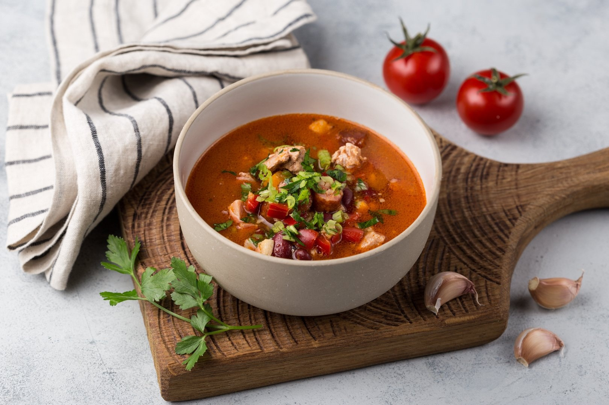

Тосканский суп с фаршем

- Ингредиенты:
- Фарш мясной (у меня свиной) — 500 г
- Петрушка — 2 ст. л.
- Паприка сладкая — 2 ч. л.
- Базилик — 1 ч. л.
- Орегано (1/2 ч.л.)
- Перец черный (1/2 ч.л.)
- Сахар — 1 ч. л.
- Соль — по вкусу
- Сливки (15%) — 350 мл
- Вода — 3 л
- Картофель — 6 шт
- Лук репчатый — 1 шт
- Чеснок (крупные) — 2 зуб.
- Масло сливочное — 50 г
- Рецепт приготовления:
- Ингредиенты для супа лучше взвесить и отмерить заранее. В сотейнике растопить половину масла. Поместить в него фарш, петрушку, паприку, сахар, черный перец, 1 зубок натертого чеснока, орегано и базилик и хорошо перемешать и тушить 15 минут.
- Довести воду до кипения и поместить в нее крупно нарезанный картофель, варить до его до полной готовности. Отобрать картофель в небольшую емкость с небольшим количеством бульона. И пюрировать. Затем вернуть в кастрюлю и хорошо размешать.
- Мелко нарезать лук и чеснок (2-й зубок) и обжарить в оставшемся масле. Добавить его в бульон и варить 2-3 минуты. Затем влить в бульон сливки и варить 5 минут. Добавить готовый обжаренный фарш и варить 15 минут.
- Суп готов. Снять с огня и дать настояться. Сервировать с листьями салата латук и тертым сыром. И, конечно же, с ароматными и хрустящими чипсами! Вот она, солнечная Италия, у вас дома!